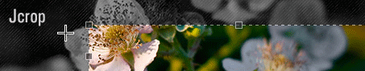

Jcrop Manual
Jcrop » Manual

Jcrop Home • Download • Manual • Examples
This document provides a roadmap for Jcrop implementation.
Introduction
Jcrop is a powerful image cropping engine for jQuery.
It's been designed so developers can easily integrate an advanced image cropping functionality directly into any web-based application without sacrificing power and flexibility (or the weeks of coding, testing and debugging). Jcrop also features clean, well-organized code that works well across most modern web browsers.
Here you'll find the documentation for Jcrop itself. This guide assumes that you have a basic knowledge of HTML and including files into a web page. At the end of the article, there are links to more advanced concepts and implementation techniques.
Getting Started
- Download the current version of Jcrop
- Place the files on your web server so you can request them from your page
- You also must have jQuery installed and included!
In the page <head> you'll need to load the requisite files. That includes:
- jQuery library
- Jcrop Javascript
- Jcrop CSS stylesheet
It should look something like this:
<script src="js/jquery.min.js"></script> <script src="js/jquery.Jcrop.min.js"></script> <link rel="stylesheet" href="css/jquery.Jcrop.css" type="text/css" />
Please note: These are only example paths, you probably will need to adjust them when you actually use them, to match the location of the files on your server. Jcrop will not function properly if you don't.
Invocation
Let's suppose we have this image our markup:
<img src="flowers.jpg" id="target" />
To convert this into a Jcrop widget, insert the following script:
<script language="Javascript">
jQuery(function($) {
$('#target').Jcrop();
});
</script>
Jcrop's default behavior is activated. Since there are no event handlers attached, it won't do anything cool, but you can see how easy it is to implement Jcrop into your page.
See the Jcrop "hello world" example
Event Handlers
Jcrop's two primary event handlers are onChange and onSelect.
| onSelect | callback | Called when selection is completed |
|---|---|---|
| onChange | callback | Called when the selection is moving |
Jcrop has a sense of state, whether there is an active selection or not. To detect when the interface is released, there is also a handler for these events:
| onRelease | callback | Called when the selection is released |
|---|
Define an event handler function:
<script language="Javascript">
function showCoords(c)
{
// variables can be accessed here as
// c.x, c.y, c.x2, c.y2, c.w, c.h
};
</script>
Attach event handlers like this:
<script language="Javascript">
jQuery(function($) {
$('#target').Jcrop({
onSelect: showCoords,
onChange: showCoords
});
});
</script>
This is a conventional jQuery syntax. Note that the last property does not have a comma following (also applies if there is only one property specified). Also be sure to leave off parenthesis on callback functions (you're referring to the named function, not calling it).
See the simple event handler demo
Setting Options
Jcrop options allow you to alter appearance and behavior.
| Option Name | Value Type | Description | Default |
|---|---|---|---|
| aspectRatio | decimal | Aspect ratio of w/h (e.g. 1 for square) | n/a |
| minSize | array [ w, h ] | Minimum width/height, use 0 for unbounded dimension | n/a |
| maxSize | array [ w, h ] | Maximum width/height, use 0 for unbounded dimension | n/a |
| setSelect | array [ x, y, x2, y2 ] | Set an initial selection area | n/a |
| bgColor | color value | Set color of background container | 'black' |
| bgOpacity | decimal 0 - 1 | Opacity of outer image when cropping | .6 |
Set these options in the same way as event handlers.
Here's an example:
<script language="Javascript">
jQuery(function($) {
$('#target').Jcrop({
onSelect: showCoords,
bgColor: 'black',
bgOpacity: .4,
setSelect: [ 100, 100, 50, 50 ],
aspectRatio: 16 / 9
});
});
</script>
Note a few things about the format of the options object:
- Text values must be quoted (e.g. 'red', '#ccc', 'rgb(10,10,10)')
- Numeric values, including decimals, should not be quoted.
- setSelect takes an array, here indicated as an array literal
- aspectRatio may be easiest to set by dividing width/height
- The last option is not followed by a comma
Further Reading
- Completing the Crop - implementing the server-side
- API Documentation - advanced functionality
- Sizing Issues - working with large images
- Changing Appearance - skinning the look and feel
- Internet Explorer Notes - quirks and issues in IE6+
- Troubleshooting Problems - when it's this easy?
- This page was last modified on 7 January 2012, at 16:19.
- This page has been accessed 755,112 times.